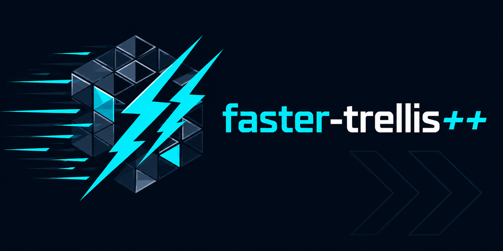
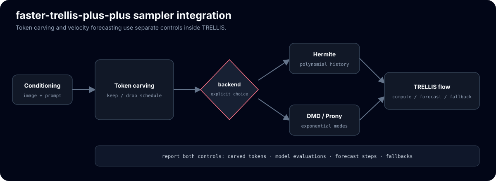

Training-free DMD velocity forecasts accelerate TRELLIS image-to-3D
Training-free acceleration for microsoft/TRELLIS image-to-3D — the exponential (DMD) forecast variant of faster-trellis, in one line of code.
git clone --recurse-submodules https://github.com/Archerkattri/faster-trellis-plus-plus cd faster-trellis-plus-plus # TRELLIS deps (CUDA toolchain required); see setup.sh for the full option list. . ./setup.sh --new-env --basic --xformers --flash-attn --spconv --nvdiffrast # Deployment-contract runtime (budget/telemetry/manifest): pip install "hicache-pp @ git+https://github.com/Archerkattri/hicache-plus-plus@master"
01
Evidence
| DMD forecast (this repo) | 0.829 F-score@0.05 at 2.76× speedup (−0.010 vs vanilla) |
|---|---|
| Hermite parent (faster-trellis) | 0.825 F-score@0.05 at 2.82× speedup (−0.014 vs vanilla) |
| Vanilla baseline (uncached) | 0.839 F-score@0.05 at 1.00× |
| DMD margin over Hermite | +0.005 at matched speedup on the deployed interval-3 schedule |
| Benchmark scope | n = 31 matched objects, Toys4K mesh F-score@0.05, sparse-structure stage |
| Deployed defaults | SS interval 3, carve ratio 0.25, first-enhance 2, DMD history 6 |
| CPU contract tests | 5 tests incl. DMD, run in CI against hicache-pp master |
02
Media

03
Install & verify
# CPU contract tests (CI cpu-contract job) python -m compileall -q trellis tests faster_utils_slat fft token_slat python tests/test_hicache.py # Hermite math asserts, expect ALL PASS python tests/test_adaptive_cfg.py # guidance math asserts, expect ALL PASS python tests/test_hicache_contract.py # 5 contract tests incl. DMD, expect 5x [PASS]
04
Limits
What this release does not claim (from the release notes):
- Historical results card "is not a current acceptance result and does not establish a universal speedup, losslessness, or quality ordering" — re-run the manifest command in example_faster.py on the target GPU before making a new claim (README).
- CPU contract tests "exercise cache lifecycle and backend selection, not model quality or end-to-end inference" (tests/test_hicache_contract.py).
- Release scope is deployment-contract adoption plus "5 CPU contract tests (incl. DMD) in CI against hicache-pp master" (v0.1.1 notes).
05
Family
| Base model | TRELLIS v1, accelerated by the hicache-plus-plus forecast core |
|---|---|
| Same base | faster-trellis |
| All 13 adapters | TRELLIS: faster-trellis, faster-trellis-plus-plus · TRELLIS.2: fast-trellis2, hermit-trellis2, hermit-trellis2-plus-plus · Hunyuan3D-2: hunyuan2-plus, hunyuan2-plus-plus · Hunyuan3D-2.1: hunyuan2.1-plus, hunyuan2.1-plus-plus · SAM: sam3d-plus, sam3d-plus-plus, fastsam3d-plus, fastsam3d-plus-plus |